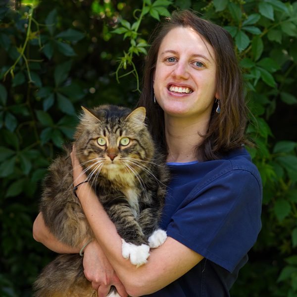
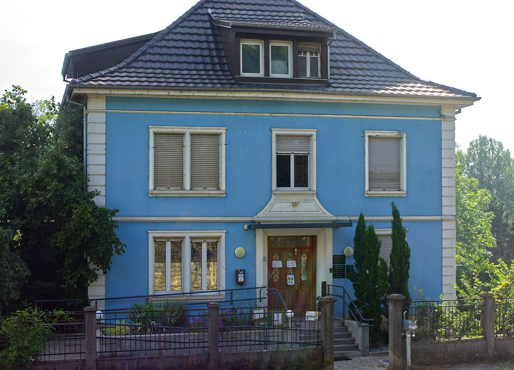
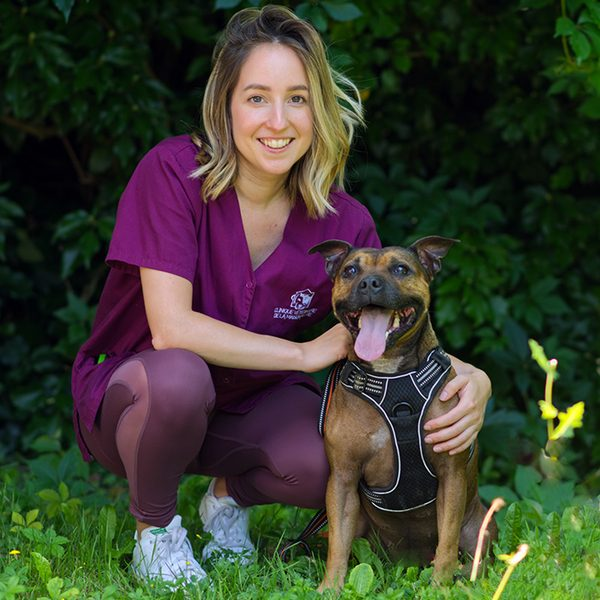
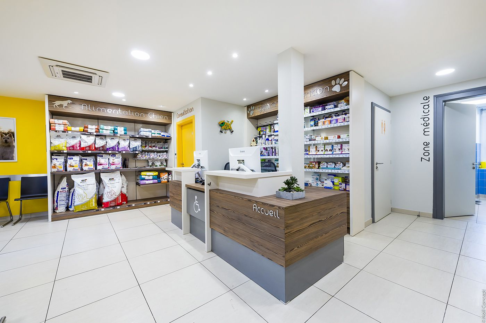

Médecine
Consultations, vaccinations, prévention et suivi de vos compagnons tout au long de leur vie.
Toute l'équipe de la Maison Bleue est à votre écoute pour répondre au mieux aux besoins de vos compagnons, de la première vaccination aux urgences de nuit.




6 vétérinaires et 6 auxiliaires
une permanence assurée nuits et week-ends

Consultation, imagerie, chirurgie et hospitalisation : chaque étape se fait à la clinique.
Consultations, vaccinations, prévention et suivi de vos compagnons tout au long de leur vie.

Une salle d'opération équipée pour réaliser les interventions dans les meilleures conditions.

Une salle de radiologie sur place pour poser un diagnostic rapidement.

Un examen d'imagerie non invasif et indolore pour affiner le diagnostic.

Un chenil pour surveiller et soigner vos animaux lorsqu'ils doivent rester parmi nous.

Des analyses réalisées à la clinique pour des résultats sans attendre.

Vétérinaires et auxiliaires travaillent ensemble au quotidien, pour que vous retrouviez toujours un visage familier à l'accueil comme en consultation.
Mathieu GrandjeanVétérinaire, gérantJeanne KleinmannVétérinaireCheryl LangVétérinaire Anne-Laure PiquardVétérinaire
Anne-Laure PiquardVétérinaire Laura TafforeauVétérinaireMarina BurgartAuxiliaire vétérinaire
Laura TafforeauVétérinaireMarina BurgartAuxiliaire vétérinaire Amandine HetzlenAuxiliaire vétérinaire
Amandine HetzlenAuxiliaire vétérinaire Melina HurthAuxiliaire vétérinaire
Melina HurthAuxiliaire vétérinaire Hélène LacanAuxiliaire vétérinaire
Hélène LacanAuxiliaire vétérinaire Morgane SaunerAuxiliaire vétérinaire
Morgane SaunerAuxiliaire vétérinaire
Anne-Sophie SimonAuxiliaire vétérinaireD'un cabinet rue des Bons-Enfants à la maison bleue du Faubourg de Mulhouse.
Mariella De Nies s'installe rue des Bons-Enfants à Altkirch.
Le cabinet devient clinique et emménage Faubourg de Mulhouse.
Mathieu Grandjean devient l'associé de Mariella De Nies.
Accueil agrandi, climatisation et rampe d'accès PMR.
Mathieu Grandjean succède à Mariella De Nies.

Consultations uniquement sur rendez-vous.
Oui, les consultations se font uniquement sur rendez-vous, du lundi au vendredi de 9h à 12h et de 14h à 19h, et le samedi de 9h à 12h.
Les urgences sont assurées 24h/24. Appelez la clinique au 03 89 40 66 06 : un service de permanence fonctionne les nuits et week-ends.
Chats, chiens et rongeurs de tous poils : toute l'équipe est à votre écoute pour répondre au mieux à leurs besoins.
Oui, la clinique dispose d'une rampe d'accès PMR et de locaux climatisés depuis sa rénovation en 2016.
Nuits, week-ends et jours fériés : la permanence vous répond et vous guide.